Tap a part to jump to it. The video shows sample leads, not real customers. Download the video to share it on WhatsApp.
Your daily routine
- Morning: open Follow-ups and call everything overdue and due today.
- Then Calling mode → New leads, never called.
- After every call, pick the outcome and set the next follow-up. Never leave a call without an outcome.
- Reply to WhatsApp chats that show a green number.
- When someone joins, pick Converted / Sale, so it counts in your monthly report.
1. Sign in
- Open ggfacademy.github.io/dialbook in Chrome (phone or computer).
- Type your email and password and tap Sign in.
- First time? Tap Create account, then ask your admin to approve you in Team. Until then you see “Waiting for approval”.
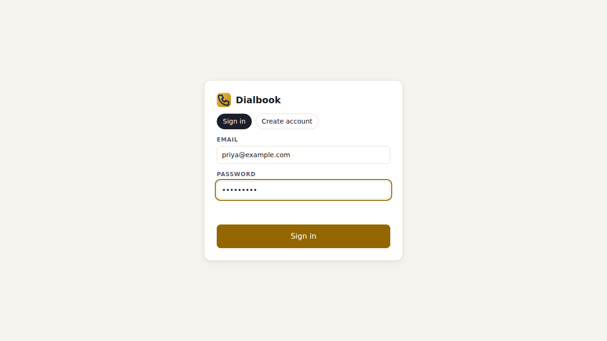
2. Your dashboard
- Shows your calls, connected calls, talk time, interested and converted leads.
- A red “Follow-ups due” number means callbacks are overdue: call them first.
- Next follow-ups lists who to call next, with Call and Open buttons.
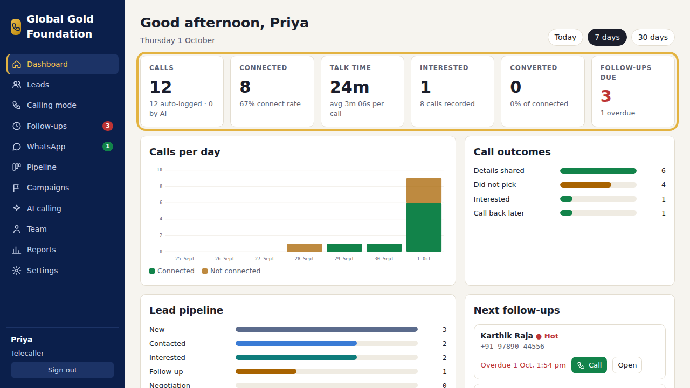
3. Your leads
- Leads shows only the leads assigned to you. New Facebook and WhatsApp leads arrive on their own.
- Search by name, phone or city. Filter by stage, campaign, language, or Follow-up due today.
- Tap a lead to open it. You can change its Stage, Priority and Language, read notes and past calls, and tap Call or WhatsApp / SMS.
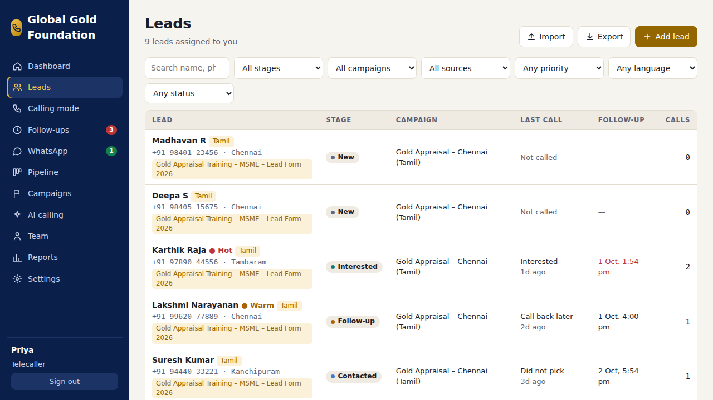
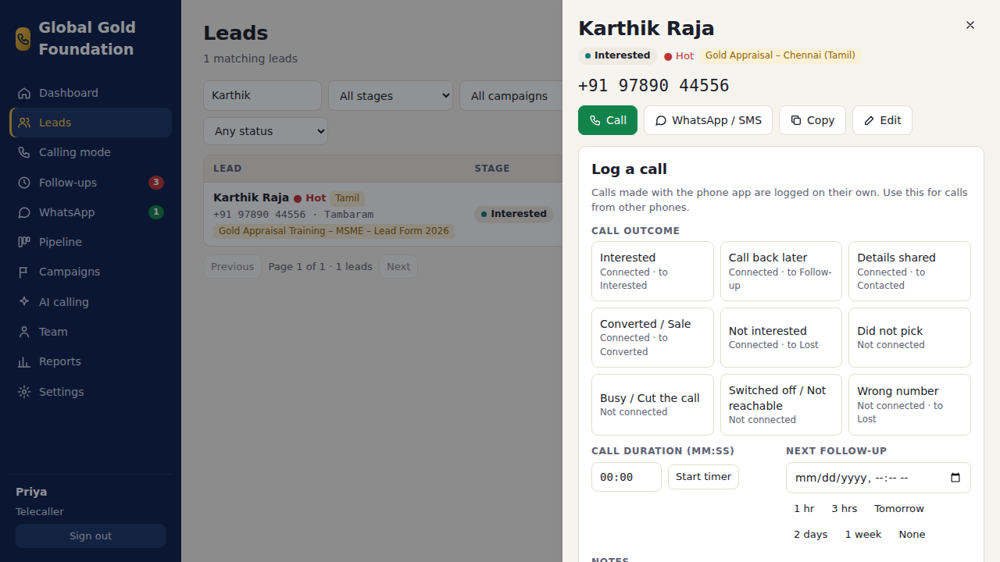
4. Add a new lead
- For walk-ins, referrals or incoming calls: Leads → Add lead.
- Fill Name and Phone, pick the Source (Walk-in, Referral…), and the program under Campaign if you know it.
- Tap Add lead. It is assigned to you. If the number already exists, the CRM warns you.
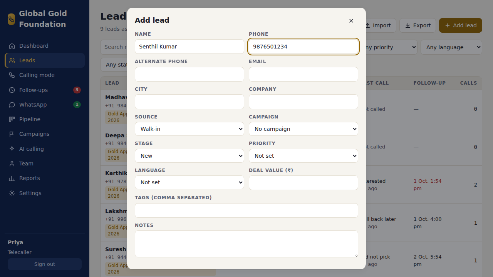
5. Calling mode: call, log, next
- Open Calling mode. Pick who to call: New leads, never called, Follow-ups due today, or all open leads. Tap Start calling.
- You see one lead at a time, with the program’s call script and the last calls.
- Tap Call now. After the call pick the outcome (Interested, Call back later, Did not pick…), set the next follow-up and write a short note.
- Tap Save and next lead. Use Skip if you cannot call this person now.
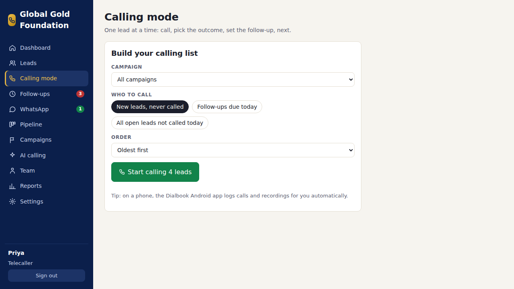
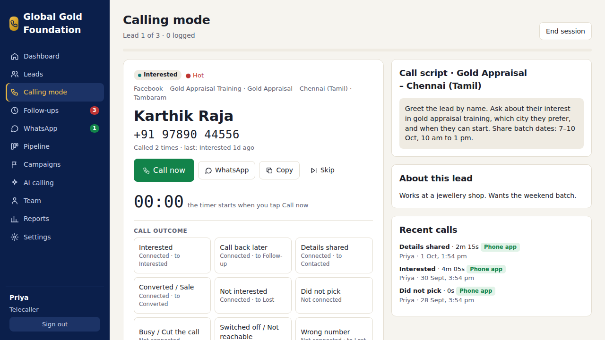
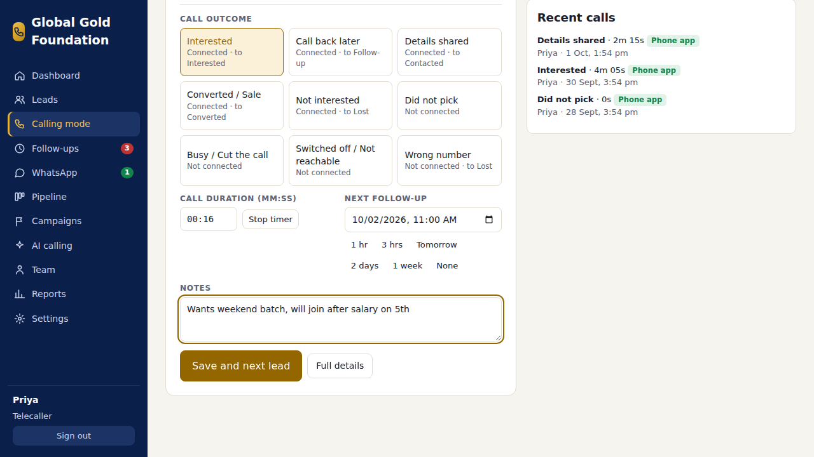
6. Follow-ups
- Follow-ups shows the callbacks you promised: Overdue (red), Today, then the next 7 days.
- Call all due now starts Calling mode with every follow-up that is due.
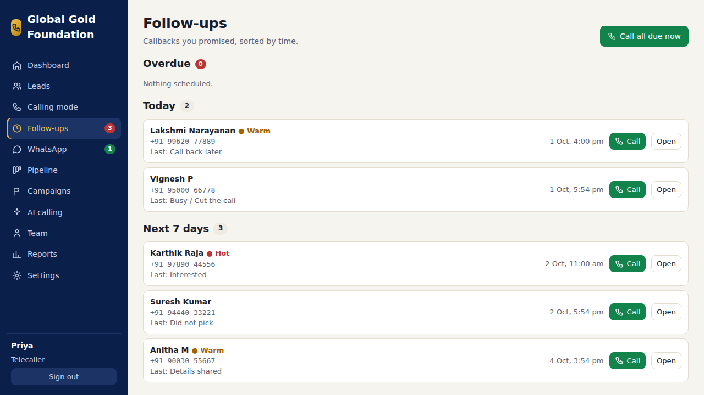
7. WhatsApp
- WhatsApp lists your chats. A green number means unread replies.
- Open a chat, type, and tap Send. Messages go from the company WhatsApp number.
- Normal messages work within 24 hours of the lead’s last message. To start a chat, or after 24 hours, tap Template, check the values (the name is filled in) and tap Send template.
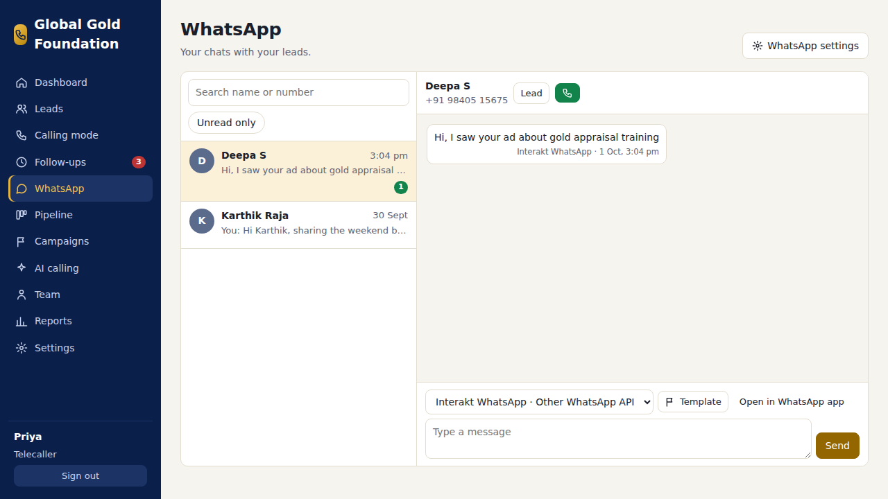
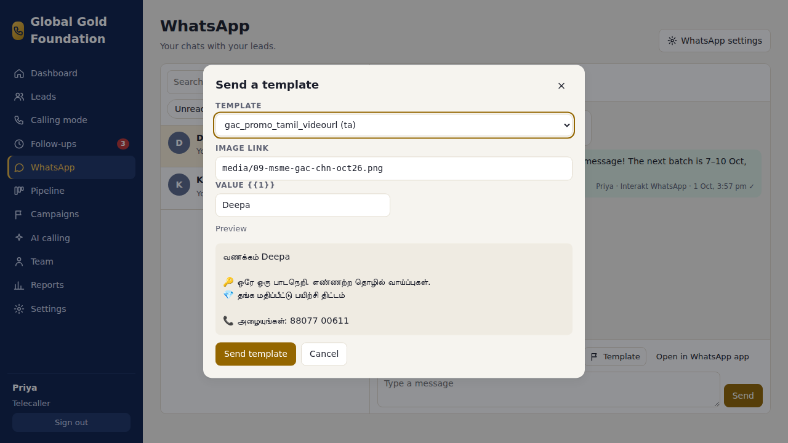
8. The Dialbook phone app
- Install it once from ggfacademy.github.io/dialbook/download/dialbook.apk (Android). Allow installing from Chrome if asked.
- Paste the connection code your admin sends you → Connect → sign in with the same email and password.
- Allow every permission, and turn on call recording in your phone’s own dialer settings.
- My leads → tap Call. When you hang up, a notification asks How did the call go? Pick the outcome, the follow-up and a note → Save outcome.
- Missed one? It waits under To log. Status shows the app is connected; tap Check for new calls now if a call is missing.
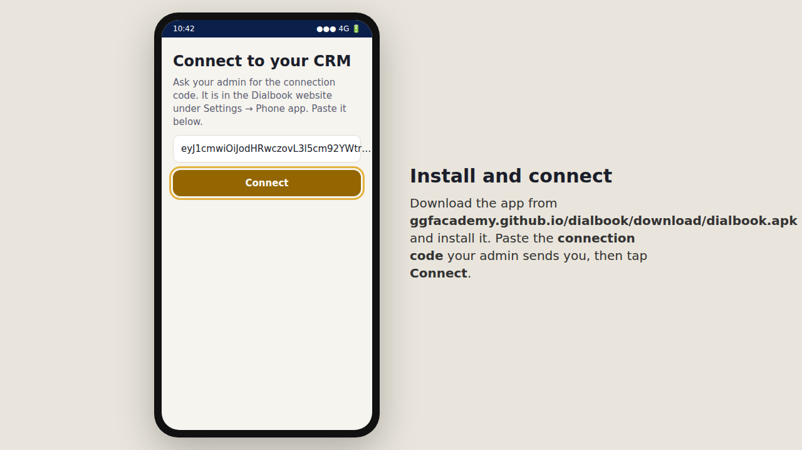
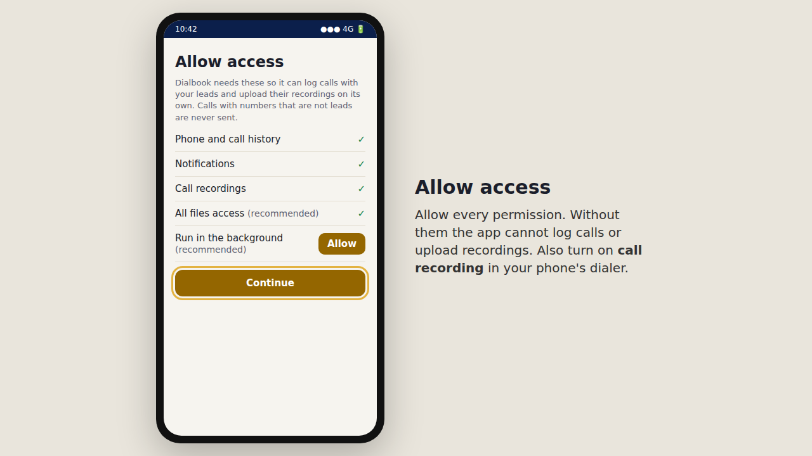
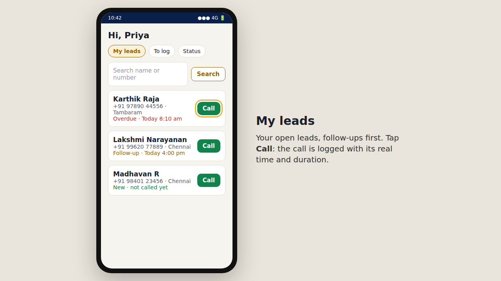
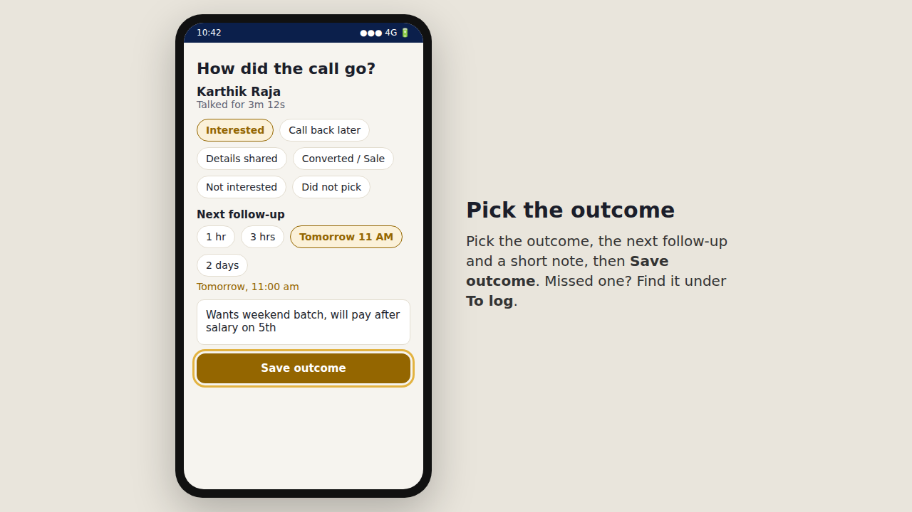
Need help?
Can’t sign in, see no leads, or the app is not logging calls? Ask your admin. They can check Team and Settings in the CRM.